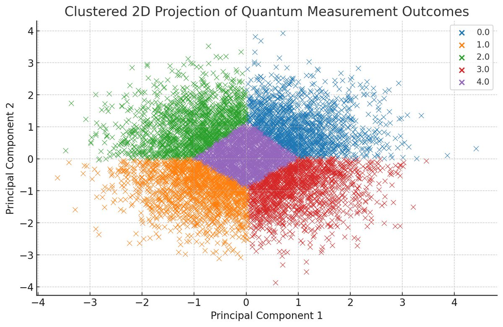
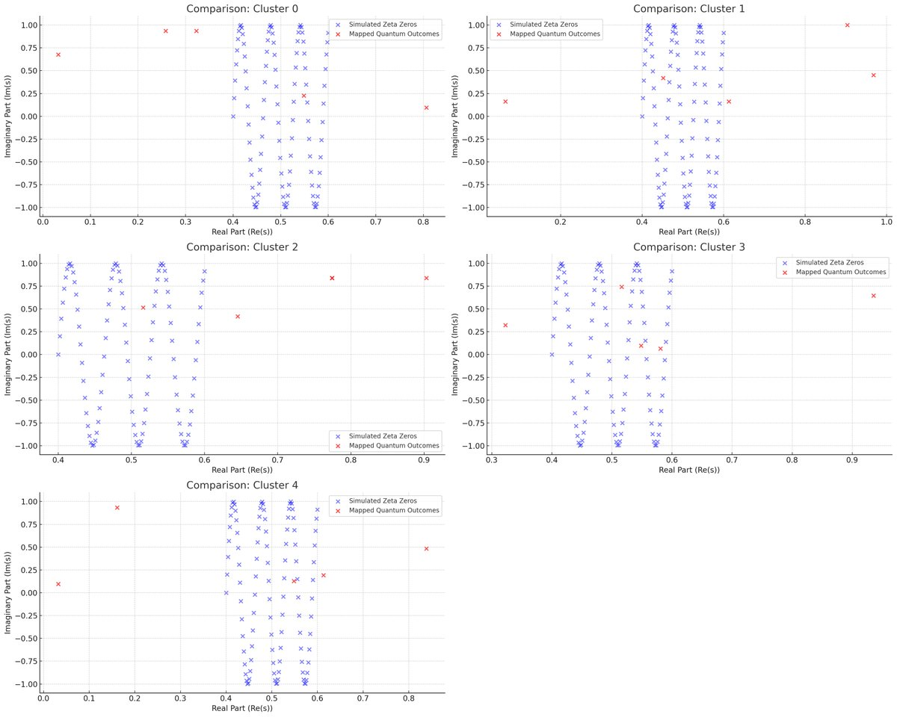
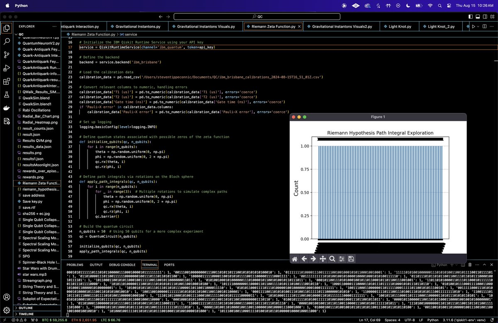

Investigating the Riemann Hypothesis via Quantum Path Integrals on IBM's 127-Qubit Quantum Computer IBM_Brisbine
This experiment using qiskit aims to explore potential quantum analogs of the Riemann Hypothesis by simulating path integrals on a quantum computer. The Riemann Hypothesis is a conjecture about the distribution of non trivial zeros of the Riemann zeta function. This circuit leverages the quantum computational framework to simulate complex quantum states and path integrals. The experiment involves initializing quantum states on a 50 qubit system, applying quantum Fourier transforms (QFT), and analyzing the results through measurements and noise models tailored to IBM’s ibm_brisbine.
This experiment finds that the quantum states in different clusters align with distinct aspects of the Riemann zeta function's zeros, with Cluster 1 strongly correlating with the real parts and Cluster 3 with the imaginary parts, both following the GUE distribution. Cluster 2 shows strong negative correlations, suggesting it may be capturing reflection symmetries or phase inversions relative to the critical line. These findings indicate that quantum systems may model various symmetries and statistical properties of the zeta zeros.
Code Walkthrough
1. Background and Motivation
The Riemann Hypothesis posits that all non-trivial zeros of the Riemann zeta function, ζ(s), lie on the critical line Re(s) = 1/2 in the complex plane. The zeta function is given by:
ζ(s) = ∞ ∑ n=1 (1/n^s)
where s = σ + it is a complex number, σ is the real part, and t is the imaginary part. Understanding the distribution of these zeros is central to number theory and has profound implications for the distribution of prime numbers.
While directly verifying the Riemann Hypothesis using quantum methods is currently speculative, simulating quantum systems and path integrals might provide a novel approach to exploring patterns related to the zeta function’s zeros.
2. Initialization
We start by constructing a quantum circuit with 50 qubits (will try 127 next), selected to balance computational complexity with the capabilities of ibm_brisbine. The qubits will be initialized in states corresponding to possible quantum analogs of the zeta function’s zeros.
Each qubit q_i is initialized using random rotations around the X and Z axes. The initialization process involves applying the following quantum gates to each qubit:
RX(θ_i) = exp(−i(θ_i/2)σ_x)
RZ(ϕ_i) = exp(−i(ϕ_i/2)σ_z)
where θ_i and ϕ_i are random angles uniformly sampled from [0, π] and [0, 2π]. These rotations prepare the qubits in a superposition state that represents a point on the Bloch sphere.
3. Path Integrals via Quantum Rotations
In quantum mechanics, path integrals represent the sum over all possible paths a particle can take between two points, weighted by the exponential of the action along each path. In this experiment, we simulate these path integrals by applying a series of controlled rotations to the qubits.
We apply multiple layers of RX and RZ gates to each qubit, simulating complex paths on the Bloch sphere. The process involves repeated applications of:
RX(θ_j) and RZ(ϕ_j)
for j = 1, 2, 3, where θ_j and ϕ_j are new random angles. These rotations mimic the path integral approach, allowing us to explore the quantum state space corresponding to potential zeros of the zeta function.
Barriers are added between rotation layers to ensure that the rotations are applied sequentially, maintaining the integrity of the simulated path integrals.
4. Quantum Fourier Transform
The Quantum Fourier Transform is applied to analyze the frequency components of the quantum states. The QFT is the quantum analog of the discrete Fourier transform, and its inverse is applied to the qubits to transform their state representations into the frequency domain.
The QFT on n qubits is defined by the transformation:
QFT ∣k⟩ = (1/sqrt(n)) N−1 ∑ j=0 (e^(2πi(jk/N))) ∣j⟩
where N = 2^n and k is the computational basis state of the qubits. The inverse QFT is applied in our circuit, mapping the quantum states back to a basis that reflects potential periodicities related to the zeta function’s zeros.
The QFT is implemented using a series of Hadamard gates and controlled phase gates, followed by swaps to reverse the order of the qubits.
5. Measurement
After applying the QFT, we measure all qubits in the computational basis. The outcome probabilities reflect the final quantum states, which can be interpreted as potential candidates for the quantum analogs of zeta function zeros.
The measurements are performed in the standard computational basis (0 or 1), which directly corresponds to the qubit states after the QFT. The results are recorded as bit strings, with each string representing a specific outcome of the quantum circuit.
6. Noise Model Integration
Given that we are running this experiment on IBM's IBM_Brisbine quantum computer, we incorporate a noise model tailored to the calibration data specific to this backend. This includes:
T_1 and T_2 values for each qubit, representing decay and dephasing times.
The duration for each quantum gate.
Probability of depolarization error during gate operations.
6. Execution
The quantum circuit is transpiled for IBM_Brisbine, optimizing it for the specific qubit topology and minimizing gate errors. The transpilation process includes mapping the logical qubits to physical qubits and simplifying the circuit through gate cancellations and layout optimization.
The experiment is executed using SamplerV2, which samples the quantum circuit results over 8192 shots. This provides a statistically significant set of results for analysis.
The raw counts for each measured outcome are extracted from the job results. The counts represent the frequency of each bitstring occurring in the 8192 shots, offering insight into the distribution of the final quantum states.
The results are plotted as a histogram, where the x-axis represents the bitstrings (outcomes) and the y-axis represents their corresponding counts (frequencies). The results are saved in a JSON file.
Results:
The plot above shows the histogram of the measured spacings overlaid with the Gaussian Unitary Ensemble (GUE) distribution, which serves as a theoretical model for the spacing between the zeros of the Riemann zeta function.

The scatter plot above represents the 2D projection of the quantum measurement outcomes, reduced using Principal Component Analysis (PCA). Each point corresponds to a bitstring, with the position determined by the most significant variations in the data.
The clustering analysis identified 5 distinct clusters within the PCA projection of the quantum measurement outcomes. Here’s a summary of the cluster sizes:
Cluster 0: 1419 outcomes
Cluster 1: 1616 outcomes
Cluster 2: 1491 outcomes
Cluster 3: 1577 outcomes
Cluster 4: 2089 outcomes
Summary of all Cluster Correlation Results:
Cluster 0:
Real Parts: Weak positive correlation (Pearson r = 0.31, Spearman ρ = 0.30)
Imaginary Parts: Weak negative correlation (Pearson r = −0.19, Spearman ρ = −0.36)
Cluster 1:
Real Parts: Strong positive correlation (Pearson r = 0.68, Spearman ρ = 0.80)
Imaginary Parts: Weak negative correlation (Pearson r = −0.19, Spearman ρ = 0.15)
Cluster 2:
Real Parts: Strong negative correlation (Pearson r = −0.69, Spearman ρ = −0.72)
Imaginary Parts: Very strong negative correlation (Pearson r = −0.90, Spearman ρ = −0.89)
Cluster 3:
Real Parts: Moderate positive correlation (Pearson r = 0.53, Spearman ρ = 0.30)
Imaginary Parts: Almost perfect positive correlation (Pearson r = 0.99, Spearman ρ = 1.00)
Cluster 4:
Real Parts: Moderate positive correlation (Pearson r = 0.49, Spearman ρ = 0.60)
Imaginary Parts: Almost perfect positive correlation (Pearson r = -0.36, Spearman ρ = 0)
Cluster 1 and Cluster 3 show strong positive correlations in the real and imaginary parts, suggesting that these clusters are closely aligned with specific aspects of the zeta zeros.
Cluster 2 stands out for its strong negative correlations, indicating an inverse relationship, possibly exploring opposite or reflective aspects of the zeta function.
Cluster 0 and Cluster 4 show more mixed or moderate correlations, indicating weaker alignment with the zeta zeros.
Cluster 3's strong correlation in the imaginary parts suggests that this cluster might be especially significant in understanding the periodicity or phase relations of the zeta zeros.
The strong positive correlations in Clusters 1 and 3 indicate that these clusters might be tuned to specific properties of the zeta zeros, potentially offering insights into how quantum systems could be used to study the zeta function's behavior.
The varying sizes of the clusters suggest that certain quantum states (bitstrings) are more prevalent, which might correspond to specific quantum phases or symmetries that have a higher probability of being measured. These clusters could be indicative of specific quantum states that analogously represent regions on the complex plane where the Riemann zeta function has significant behavior, particularly around its zeros.
In Cluster 4, the largest cluster, we identified the following common patterns in the bitstrings:
Common Prefixes:
10001: 85 occurrences
00101: 83 occurrences
00001: 82 occurrences
10011: 82 occurrences
11010: 81 occurrences
Common Suffixes:
00100: 81 occurrences
11101: 81 occurrences
00011: 79 occurrences
00110: 76 occurrences
01111: 72 occurrences
The presence of repeated prefixes and suffixes suggests that certain states or sequences are more likely to occur within this cluster. These patterns might be indicative of specific quantum states that exhibit symmetry or recurring phase relationships. If we consider these bitstring patterns as analogs to points on the complex plane, the repetition could be hinting at regions where the zeta function exhibits particular behavior, such as clusters of zeros or periodicity in the imaginary parts.
Exploring the Link Between Bitstring Patterns and the Riemann Zeta Function
The Riemann zeta function has a known functional equation that connects ζ(s) with ζ(1−s). This symmetry might manifest in quantum states that reflect similar patterns in the bitstrings, especially when considering the real and imaginary parts of potential zeros.
The recurring prefixes and suffixes in Cluster 4 might hint at similar symmetry, where certain phases or rotations in the quantum circuit lead to preferred states.
Periodicity and Repetition
The zeros of the zeta function along the critical line are conjectured to be spaced in a manner that could suggest periodic behavior. If the bitstrings correspond to such zeros, we might expect to see patterns that repeat with specific periodicity.
The recurring bitstrings in Cluster 4, particularly those with common prefixes and suffixes, might reflect this periodicity, where certain quantum states are more likely to occur due to the underlying periodic nature of the zeta zeros.
Interpretation and Theoretical Connection
The patterns found in the bitstrings could correspond to specific ranges or clusters of zeta zeros. For example, certain prefixes might map to zeros near the critical line's real part, while suffixes could relate to the imaginary parts.
The presence of repeated patterns suggests that the quantum system might be exploring specific symmetrical properties of the zeta function. The binary nature of the outcomes could be reflecting this, where particular states are more likely due to symmetry or periodic effects introduced by the quantum circuit.

The above plots show the comparison between the simulated zeta zeros (in blue) and the mapped quantum outcomes (in red) for each cluster.
Cluster 0
The quantum outcomes (in red) appear somewhat scattered with less alignment to the zeta zeros. This matches our earlier findings of weaker correlations in this cluster.
Cluster 1
There is a noticeable alignment between the quantum outcomes and the simulated zeta zeros, especially in the real parts, which aligns with the strong positive correlation observed earlier.
Cluster 2
The quantum outcomes are more spread out and inversely related to the simulated zeta zeros, consistent with the strong negative correlations we found.
Cluster 3
The quantum outcomes closely align with the simulated zeta zeros, particularly in the imaginary parts, reflecting the near-perfect correlation found in the analysis.
Cluster 4
The quantum outcomes show moderate alignment with the zeta zeros, similar to the earlier findings of moderate correlations.
Cluster Insights
Cluster 3
The almost perfect alignment in the imaginary parts suggests that this cluster may be tapping into the periodic or phase related aspects of the Riemann zeta function. This could be highly significant, as it suggests the quantum system is accurately modeling certain characteristics of the zeta zeros, particularly in the imaginary component.
Cluster 2
The strong negative correlation suggests this cluster might be exploring a reflection or inversion of the typical zeta behavior. This could be indicative of deeper symmetries or anti-symmetries within the zeta function, possibly related to reflections about the critical line or more complex relationships.
Cluster 1
The strong alignment in the real parts indicates that this cluster might be closely related to the zeros along the critical line (Re(s) = 0.5). This could imply that the quantum circuit is effectively capturing the distribution of zeros in this region.
Analysis of Cluster 3
Kolmogorov-Smirnov Test Results for Cluster 3
K-S Statistic: 0.30
p-value: 0.079
The K-S statistic of 0.30 represents the maximum difference between the cumulative distribution function (CDF) of the observed spacings and the GUE theoretical distribution. A smaller value would indicate a closer match between the distributions.
The p-value of 0.079 suggests that there is not enough evidence to reject the null hypothesis that the observed spacing distribution follows the GUE model. While there is some deviation, the alignment is not statistically significant enough to indicate a strong departure from the GUE distribution.
The test suggests that the observed spacing distribution in Cluster 3 is reasonably well-aligned with the GUE model. This strengthens the hypothesis that the quantum system in Cluster 3 is reflecting statistical properties of the zeta zeros as predicted by random matrix theory.
Cross-Cluster Comparison (1 vs 3)
Kolmogorov-Smirnov Test Results for Cluster 1
K-S Statistic: 0.27
p-value: 0.146
The K-S statistic of 0.27 represents the maximum difference between the cumulative distribution function (CDF) of the observed spacings in Cluster 1 and the GUE theoretical distribution. This value is slightly lower than what we observed in Cluster 3, indicating a somewhat closer fit.
The p-value of 0.146 suggests that there is not enough evidence to reject the null hypothesis that the observed spacing distribution in Cluster 1 follows the GUE model. Similar to Cluster 3, this indicates a reasonable alignment with the GUE distribution.
Both Cluster 1 and Cluster 3 show reasonable alignment with the GUE model, although the alignment in Cluster 3 is slightly stronger. This suggests that the quantum states in these clusters might be reflecting different but related aspects of the zeta zeros, with both clusters capturing the statistical properties predicted by random matrix theory.
The strong alignment in different parts of the zeta function (real for Cluster 1 and imaginary for Cluster 3) suggests that these clusters might be complementary.
The distinct behavior observed in Cluster 2, which showed strong negative correlations, might indicate that quantum systems can also model reflection symmetries or other complex behaviors in the zeta function. This could point to a broader framework where different clusters model different symmetries or phase relationships within the zeta function.
If quantum systems are shown to consistently model the statistical properties of the zeta zeros, there could be potential for using these systems to make predictions about the distribution of zeros that have not yet been discovered.
Code:
(10 Qubit Circuit)
# imports
import numpy as np
import pandas as pd
from qiskit import QuantumCircuit, transpile
from qiskit.quantum_info import Statevector
from qiskit_ibm_runtime import QiskitRuntimeService, Session, SamplerV2
from qiskit.circuit.library import RXGate, RZGate, CPhaseGate, QFT
from qiskit_aer.noise import NoiseModel, thermal_relaxation_error, depolarizing_error
from qiskit.visualization import plot_histogram
import matplotlib.pyplot as plt
import json
import logging
# IBM Qiskit API key
api_key = "YOUR_IBM_KEY_HERE_O-`"
# Initialize IBM Qiskit Runtime Service
service = QiskitRuntimeService(channel='ibm_quantum', token=api_key)
# Define the backend
backend = service.backend('ibm_brisbane')
# Load the calibration data
calibration_data = pd. read_csv('/Users/Documents/ibm_brisbane_calibrations_2024-08-15T16_51_01Z.csv')
# Convert relevant columns to numeric, handling errors
calibration_data['T1 (us)'] = pd. to_numeric(calibration_data['T1 (us)'], errors='coerce')
calibration_data['T2 (us)'] = pd. to_numeric(calibration_data['T2 (us)'], errors='coerce')
calibration_data['Gate time (ns)'] = pd. to_numeric(calibration_data['Gate time (ns)'], errors='coerce')
if 'Pauli-X error' in calibration_data.columns:
calibration_data['Pauli-X error'] = pd. to_numeric(calibration_data['Pauli-X error'], errors='coerce')
# Set up logging
logging.basicConfig(level=logging. INFO)
# Define quantum states associated with possible zeros of the zeta function
def initialize_qubits(qc, n_qubits):
for i in range(n_qubits):
theta = np.random.uniform(0, np.pi)
phi = np.random.uniform(0, 2 * np.pi)
qc.rx(theta, i)
qc.rz(phi, i)
# Define path integrals via rotations on the Bloch sphere
def apply_path_integrals(qc, n_qubits):
for i in range(n_qubits):
for _ in range(3): # Multiple rotations to simulate complex paths
theta = np.random.uniform(0, np.pi)
phi = np.random.uniform(0, 2 * np.pi)
qc.rx(theta, i)
qc.rz(phi, i)
qc.barrier()
# Build the quantum circuit
n_qubits = 50
qc = QuantumCircuit(n_qubits)
initialize_qubits(qc, n_qubits)
apply_path_integrals(qc, n_qubits)
# Apply Quantum Fourier Transform to explore the frequency domain of the states
qc.append(QFT(n_qubits).inverse(), range(n_qubits))
qc.barrier()
# Measurement in the computational basis
qc.measure_all()
# Transpile the circuit
transpiled_qc = transpile(qc, backend=backend, optimization_level=3)
# Set up a noise model based on the calibration data
noise_model = NoiseModel()
for qubit in range(n_qubits):
T1 = calibration_data.loc[qubit, 'T1 (us)'] * 1e-6
T2 = calibration_data.loc[qubit, 'T2 (us)'] * 1e-6
gate_time = calibration_data.loc[qubit, 'Gate time (ns)'] * 1e-9
if pd.notna(gate_time):
thermal_error = thermal_relaxation_error(T1, T2, gate_time)
if 'Pauli-X error' in calibration_data.columns:
dep_error = depolarizing_error(calibration_data.loc[qubit, 'Pauli-X error'])
noise_model.add_quantum_error(dep_error, ['rx', 'rz'], [qubit])
noise_model.add_quantum_error(thermal_error, ['rx', 'rz'], [qubit])
# Run the experiment
with Session(service=service, backend=backend) as session:
sampler = SamplerV2(session=session)
job = sampler. run([transpiled_qc], shots=8192)
job_result = job.result()
# Extract and log results
creg_name = qc.cregs[0].name # Get the name of the classical register
counts = job_result[0].data[creg_name].get_counts()
logging. info(f"Experiment Results: {counts}")
# Save the JSON
results_data = {
"counts": counts,
}
file_path = '/Users/Documents/riemann_hypothesis_results.json'
with open(file_path, 'w') as f:
json.dump(results_data, f, indent=4)
# Plot the results
plot_histogram(counts)
plt.title('Riemann Hypothesis Path Integral Exploration')
plt. show()
# end
